Pantallas del prototipo — hoja de contacto
Cada archivo .svg de esta carpeta se importa a Figma como un frame editable de 360 × 800.
Flujo normal
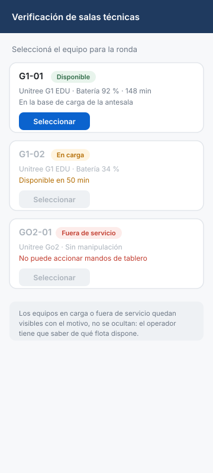
1 · Selección de robot — incluye un equipo en carga y uno fuera de servicio para mostrar el estado deshabilitado con su motivo.
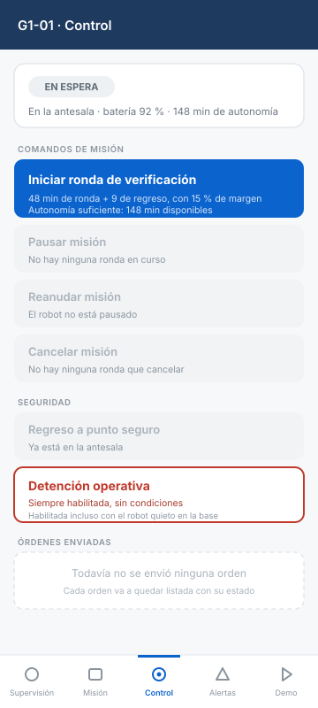
4b · Control en espera — punto de partida: iniciar habilitado y el resto deshabilitado con su motivo.
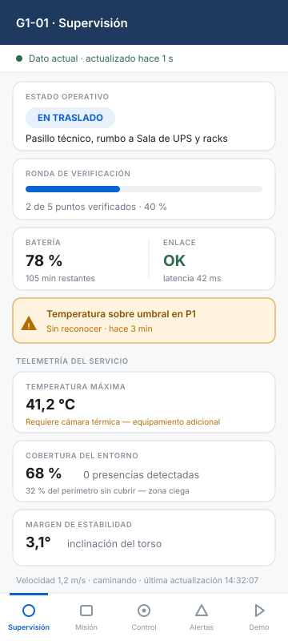
2 · Supervisión — las ocho variables obligatorias más las tres del servicio.
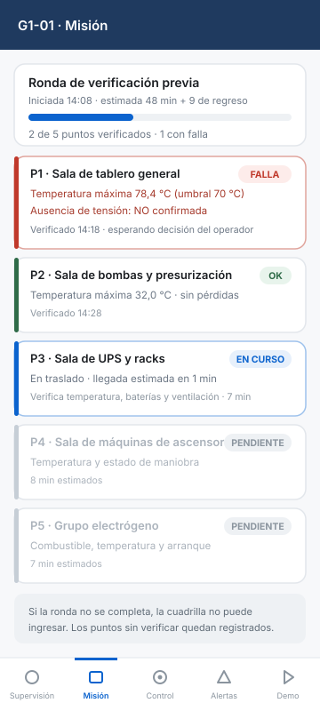
3 · Misión — los cinco puntos de la ronda con su resultado.
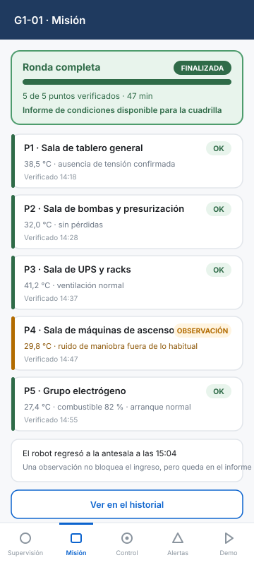
3b · Misión finalizada — cierre del flujo normal: 5 de 5 puntos e informe disponible.
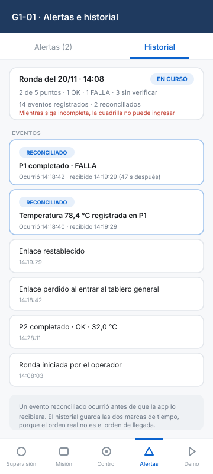
5b · Historial — eventos persistidos, con los reconciliados marcados.
Flujo con falla
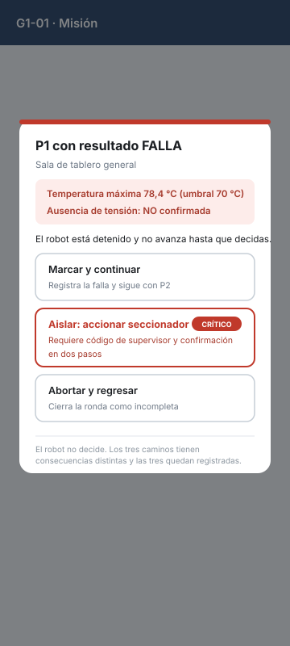
Modal · Decisión de anomalía — los tres caminos del subproceso.
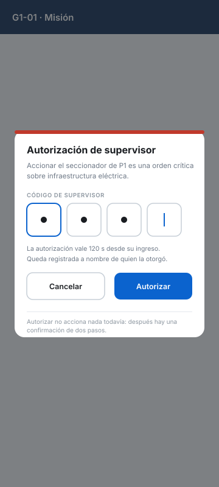
Modal · Autorización — código con vigencia de 120 s.
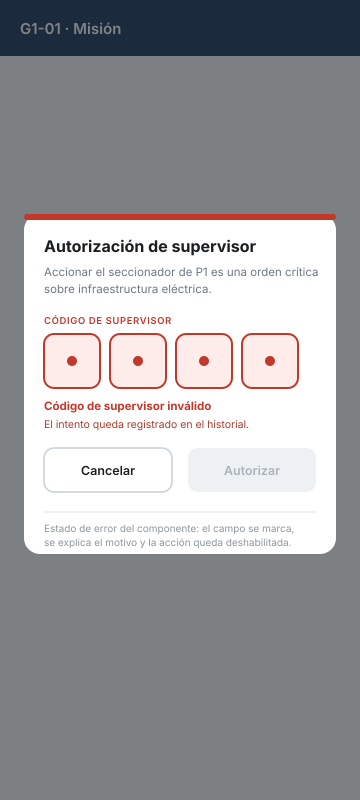
Modal · Autorización rechazada — estado de error del componente.
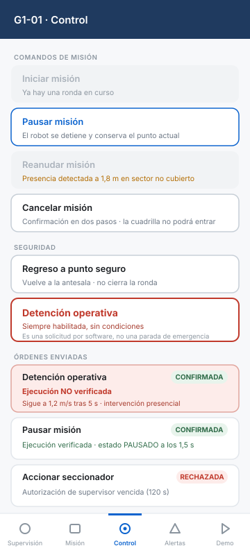
4 · Control — condiciones de habilitación visibles y una orden confirmada que no se ejecutó.
Estados y contingencias
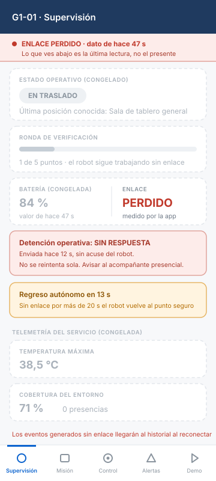
2b · Supervisión sin enlace — telemetría congelada, enlace al día, orden sin respuesta.
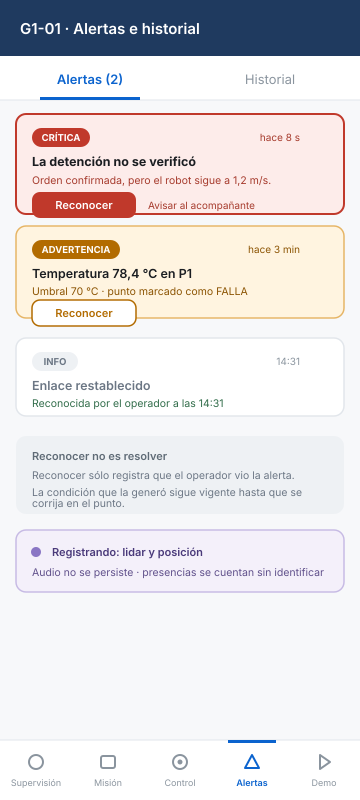
5 · Alertas — tres severidades y la distinción entre reconocer y resolver.
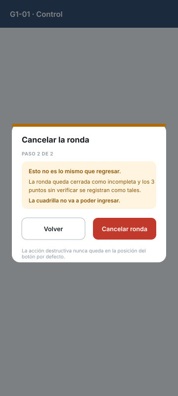
Modal · Confirmación — segundo paso de cancelar la ronda.
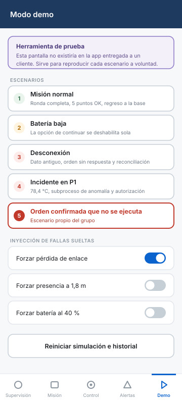
6 · Modo demo — los cinco escenarios, declarado como herramienta de prueba.
Componentes
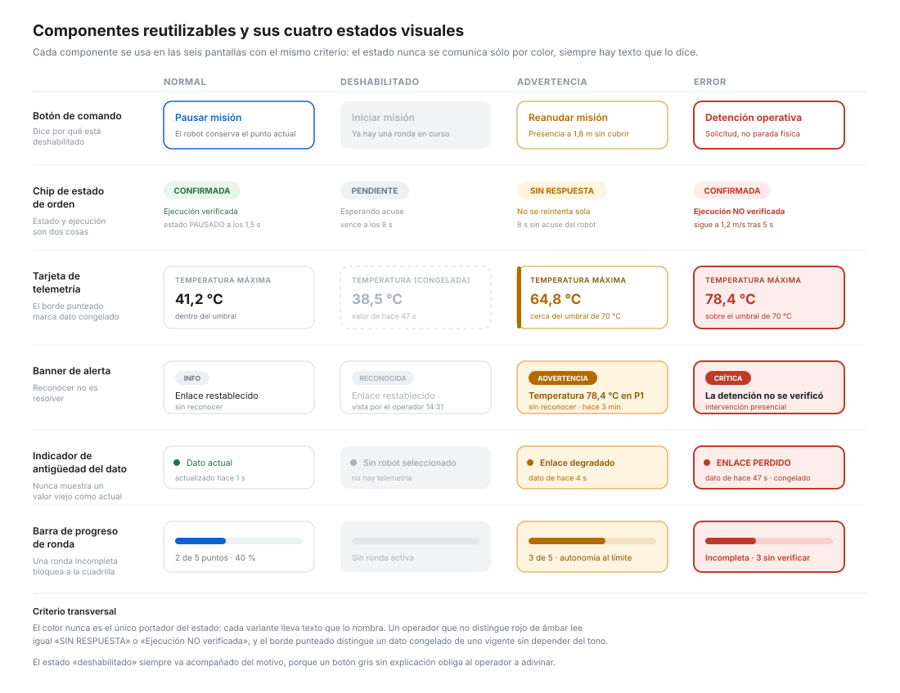
Seis componentes × cuatro estados — normal, deshabilitado, advertencia y error.